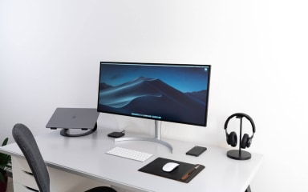

We are dedicated to helping sole traders and small businesses thrive online. Let's create a beautiful, accessible website that showcases your unique brand and boosts your online presence. Your site will be SEO-optimized, fast, user-friendly, and built to convert visitors into customers.

By "bespoke" we mean website that is meticulously crafted from scratch, with every detail tailored to your specific needs.
We ensure your website is optimized for search engines, increasing visibility and attracting organic traffic.
Your website will look great and function seamlessly on all devices, from desktops to tablets and smartphones.

We offer ongoing support and maintenance to keep your website up-to-date and running smoothly.
The cost of a bespoke website can range from £500 to £1000 depending on the size and complexity of the site's features.
We are dedicated to helping sole traders and small businesses thrive online.